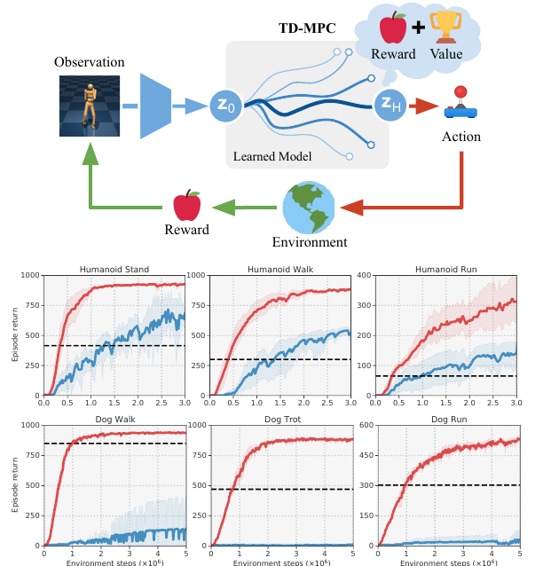
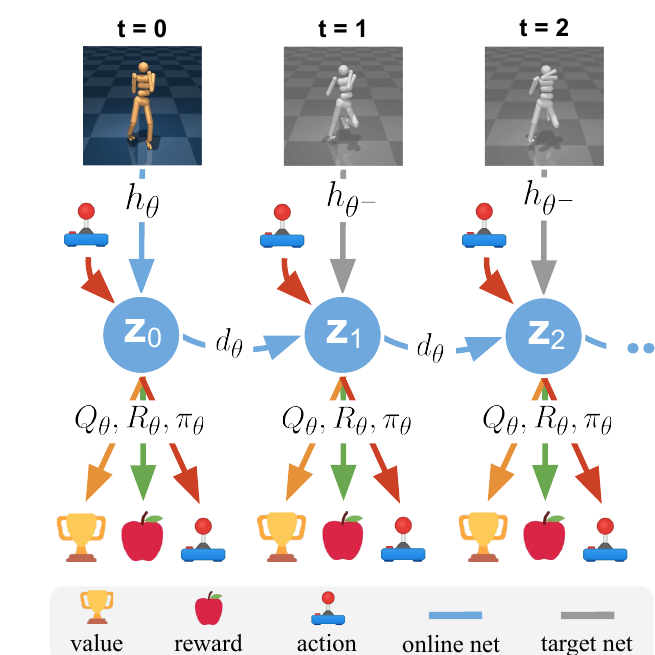
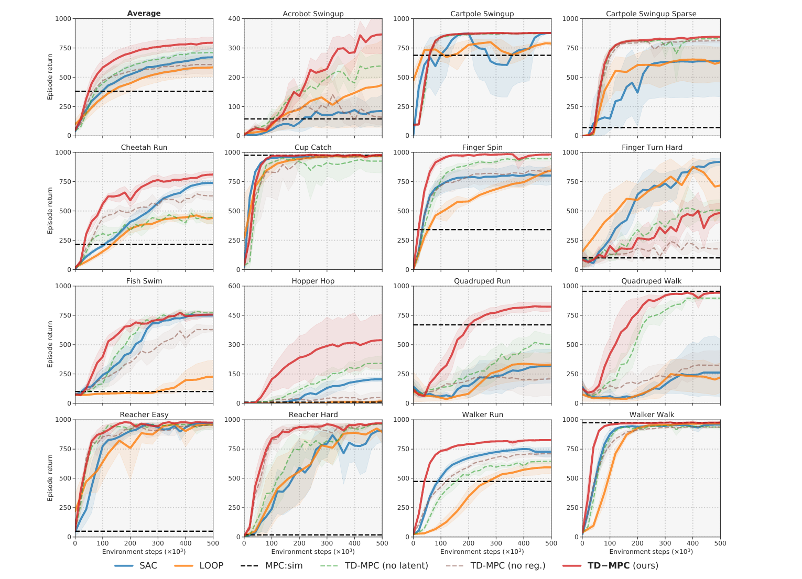
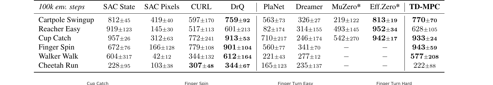
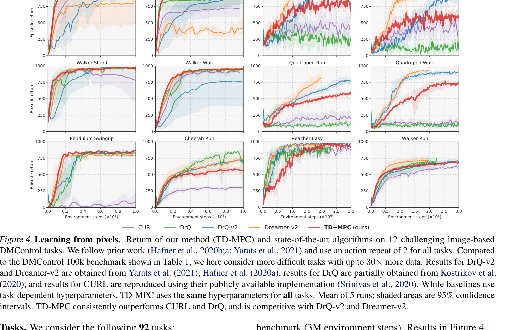
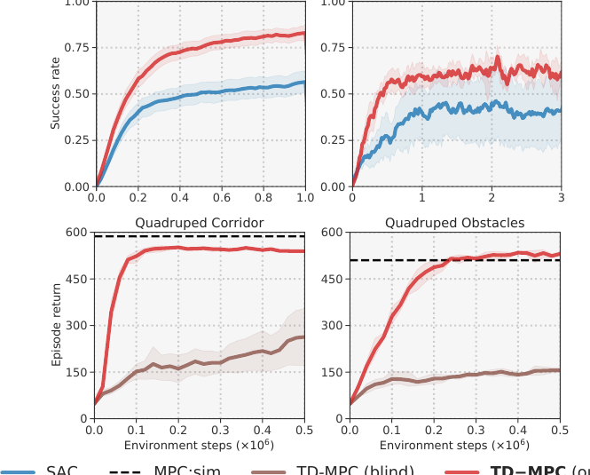
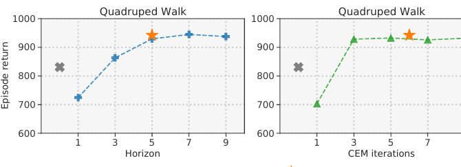
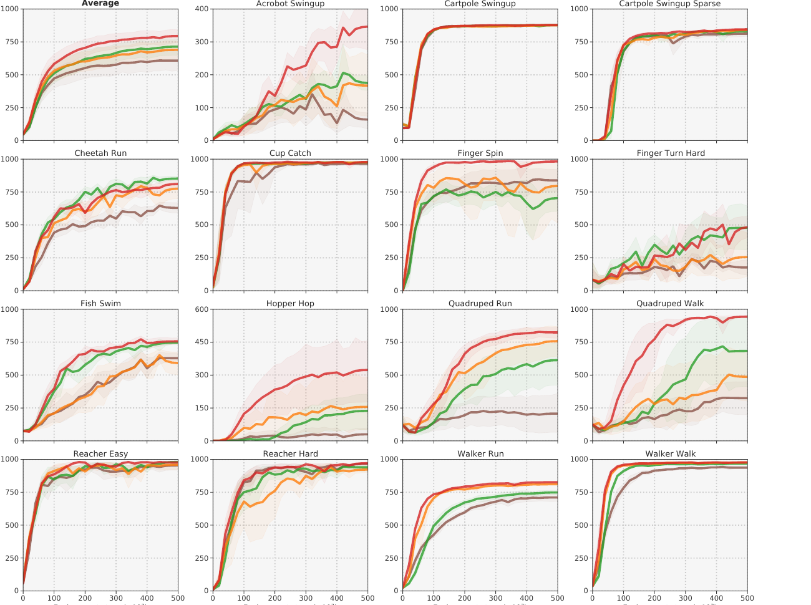

TD-MPC: A World Model for Action
TD-MPC makes a useful turn in model-based RL: it moves the world model's job from reconstructing every visible detail to predicting the parts that matter for action.
The entry point of TD-MPC is an old problem in model-based RL. If an agent wants to evaluate the future before acting, it needs an internal model. A more complete model looks more reliable for planning, while computation and model error both grow with the planning horizon.
The paper compresses that problem into a concrete interface: if an agent wants to imagine the future before acting, what kind of world model does it actually need?
The natural answer is to build the most complete model possible. Given the current state and an action, it should predict the next image, the next state, and every changing detail in the environment. This sounds reasonable. In continuous control, it is often too expensive.
A walking robot is surrounded by details: floor texture, shadows, background colors, pixel noise, and body details irrelevant to the task. Training a model to reproduce all of them spends capacity on information the controller may never use. Planning then calls the model repeatedly. A small one-step error can become a larger rollout error after several imagined steps.
TD-MPC makes a direct judgment: for an acting agent, the important test for a world model is whether it helps choose better actions.
The Old Problem Of Long-Horizon Planning
A simple route in reinforcement learning is to avoid explicit environment modeling and learn a policy through trial and error. Given a state, the policy outputs an action. SAC-like model-free methods live in this family. They are relatively simple and stable, while their sample efficiency can be poor.
Model-based RL takes another route. The agent first learns a model, then tries actions inside that model. It can ask:
if I execute action a, what will happen over the next few steps?This is model predictive control, or MPC. The procedure is fixed: at each time step, look ahead for a short horizon, evaluate many candidate action sequences, choose the sequence with the highest predicted return, and execute only its first action. At the next observation, plan again.
This mechanism fits continuous control well. The action can be joint torque, velocity, direction, or another continuous vector, instead of a discrete button such as left, right, or jump. Humanoid and Dog locomotion tasks have high-dimensional action spaces, where pure trial-and-error learning can be slow.
MPC also has a clear failure mode. A short horizon can be myopic. A long horizon is expensive, and errors in the learned model accumulate. TD-MPC's central compromise is simple: use the model for the near future, and use a value function for the far future.

Short-Term Model, Long-Term Q
The name TD-MPC has two parts. MPC handles short-horizon planning. Temporal difference learning trains long-term value estimates.
Long-term value here is a number produced by a network. More precisely, the paper uses Q(z, a): given a latent state z and an action a, output the expected long-term reward from that point.
During inference, TD-MPC encodes the current observation into a latent state z_0. It then samples many candidate action sequences. For each sequence, it repeatedly calls the dynamics model:
z_0 + a_0 -> z_1
z_1 + a_1 -> z_2
z_2 + a_2 -> z_3
...
z_HThis is a model rollout. The robot is still in the real environment; the learned dynamics model is being called several times internally to imagine possible futures. Each candidate trajectory receives a score:
short-term rewards + terminal Q valueThe first term comes from reward predicted along the short rollout. The second term comes from the Q function at the end of the planning horizon. MPC can therefore avoid rolling out very far while still accounting for long-term return.
This is the paper's clean interface: model-based planning handles local action details, and TD value learning reconnects the local plan to the long-term objective.
TOLD: A Latent Model Built For Acting
The model inside TD-MPC is called TOLD: Task-Oriented Latent Dynamics. The name can sound abstract, but the object is a set of neural networks:
h: observation -> latent state z
d: z + action -> next z
R: z + action -> reward
Q: z + action -> long-term value
pi: z -> candidate action
The raw observation can be robot state or image input. Either way, it must become numbers. The network that turns raw input into a latent vector is the encoder, also called the representation network. TD-MPC uses h to encode an observation into z, and planning happens inside that latent representation.
The key move is that TD-MPC does not require z to reconstruct the full world. It does not train the model to predict the next image or recover every state detail. The latent dynamics is trained through reward prediction, TD value loss, and latent consistency.

d, attach reward/value/policy heads at each latent state, and use target networks for the bootstrapped targets.
Read this figure as the training contract. The model is not asked to draw the next camera frame. It is asked to make latent states that support three predictions the planner will actually use: immediate reward, terminal value, and the next latent state. That is where the paper's "task-oriented" claim becomes concrete.
This changes the objective of the world model. The training signal pushes z toward information that affects reward, value, and planning. For Humanoid walking, posture, velocity, and falling matter. Background texture exists in the world, yet it is mostly a burden for the current task.
This leaves an important question: how much generality does a task-oriented representation lose? If the reward changes, or the task changes, can the same latent still be reused? TD-MPC's answer is engineering-first: make the current task strong. The tradeoff works, and it creates room for later world-model work.
What Makes TD-MPC's World Model Different
A common intuition for world models is reconstruction-oriented: a model understands the world when it can predict future observations. TD-MPC is closer to control-oriented modeling: the model's main responsibility is to support action selection.
Terminology
reconstruction-orientedtraining is organized around reconstruction: compress the observation into a latent state, then recover the image or full state from that latent. Its standard is reconstruction quality: how faithful the recovery is.
control-orientedtraining is organized around action. The latent state only needs to help predict reward, value, and the next latent state so MPC can choose a better action. Its standard is action quality: how good the selected action is in the environment.
This resembles MuZero in spirit. MuZero also organizes its model around a planning interface: representation, reward, value, and policy. TD-MPC brings that style into high-dimensional continuous action spaces such as Dog and Humanoid locomotion.
What The Experiments Actually Test
The experiments are an interface stress test. They ask whether TD-MPC survives several pressures at once: state-based control, image-based control, sparse rewards, goal-conditioned manipulation, high-dimensional actions, multi-task learning, multi-modal input, and limited planning compute. The paper reports 92 continuous-control tasks across DMControl and Meta-World.
The first evidence block is state-based DMControl. The comparison is useful because the baselines attack the problem from different sides: SAC is model-free, LOOP augments SAC with a learned model, MPC:sim plans with a ground-truth simulator, and the TD-MPC ablations remove either the latent model or the latent consistency regularizer.

This figure is the main empirical support for the method story. If the latent model were only a cheap reconstruction shortcut, it would be hard to explain why it helps more on tasks where local planning matters. The ablation curves also matter: removing the latent structure or the consistency regularizer weakens performance, which supports the claim that the latent rollout objective is doing real work.
The image-based setting is a stricter test. Here, TD-MPC receives pixels instead of compact simulator state, but it still does not train a reconstruction model. The 100k benchmark table is useful because several baselines are specialized for pixels, while TD-MPC keeps the same control-oriented modeling principle.


Meta-World and multi-modal control test a different question: does the reward-centric latent representation still help outside pure locomotion? In the top row below, TD-MPC improves success rate on 50 goal-conditioned manipulation tasks and on MT10 multi-task learning. In the bottom row, the multi-modal version uses proprioception plus an egocentric camera; the blind variant keeps only proprioception and falls behind.

The compute-budget experiment is small, but it is conceptually important. MPC has a knob at inference time: how many model steps and optimization iterations should the agent spend before acting? TD-MPC improves as planning budget increases, while the learned policy prior alone is weaker than planning.

The strongest ablation for the world-model claim is the latent dynamics objective. The paper compares no regularization, reconstruction loss, contrastive loss, and latent state consistency. Reconstruction and contrastive objectives help over no regularization, but the proposed latent consistency objective is the most consistent across the 15 DMControl tasks.

Put together, the experiments support a narrower and stronger claim than "world models help RL." TD-MPC shows that, for continuous control, a task-oriented latent model can be good enough for short-horizon planning, and a terminal value function can cover the rest of the return. The remaining weakness is also visible in the plots: exploration-heavy tasks such as Finger Turn Hard are still difficult, and task-oriented representations may not transfer cleanly when the reward or dynamics regime changes.
Open Questions: The Cost Of Task-Oriented World Models
TD-MPC's core assumption can be written as a testable interface: latent rollout predicts short-term rewards, terminal Q estimates return beyond the planning window, and MPC chooses actions using their combined score. That interface moves the world-model evaluation standard from reconstruction quality to action quality.
The first risk is representation sufficiency. The training objective is pulled by the current task's reward and value, so the latent state tends to preserve variables that are useful for the current task. In Humanoid walking, discarding background texture is usually good. After task changes, reward rewrites, or contact dynamics entering a new regime, a discarded variable may become necessary state information.
The second risk is regime mixing. TD-MPC uses one unified latent dynamics model, while real physical systems often have discontinuous regimes. A foot touching the ground and a foot leaving the ground follow different transition dynamics. A hand hitting an object and a hand moving through free space do as well. A single dynamics model may average these modes. PRISM-WM pushes in a related direction by using MoE dynamics to explicitly decompose hybrid dynamics.
The third risk is horizon decomposition. TD-MPC splits the future into two parts: short-term model rollout and long-term terminal Q. This is effective in continuous control, but it assumes that the latent state at the end of the short rollout contains enough information for the Q function to estimate the long-term objective. If long-term success depends on variables lost during the early rollout, terminal value can become overly optimistic.
Later world-model work can inherit this evaluation style and push on three pressure points: whether the representation is sufficient, whether latent dynamics can express multiple transition regimes, and whether terminal value can reliably cover the future beyond the planning window.
Sources
- Temporal Difference Learning for Model Predictive Control, Hansen, Wang, and Su, ICML 2022.
- TD-MPC project page, including videos and benchmark summaries.
- MuZero: Mastering Atari, Go, Chess and Shogi by Planning with a Learned Model, Schrittwieser et al., Nature 2020.